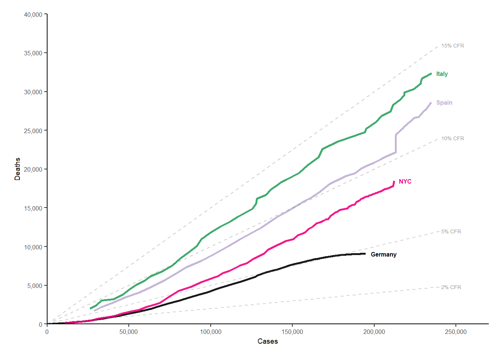

3 Transparency criteria
In this report I am doing an open peer review of a scientific paper by filling in transparency criteria, I am also reproducing a plot in a paper to test reproducibility of the code. This is the first article I have chosen:
Article: Epidemiological and evolutionary consequences of different types of CRISPR-Cas systems
Authors: Hélène Chabas, Viktor Müller, Sebastian Bonhoeffer and Roland R. Regoes
The general aim of this study was to determine the importance of molecular differences between 3 types of CRISPR-cas systems. The authors developed a stochastic epidemiological model for this.
Outcome would be that type 3 systems could outcompete type 1 and 2. This is because for type 1 and 2 the control of phage evolution is mediated by spacer diversity and there is a diversity critical threshold whereas for type 3 CRISPR-Cas systems, spacer diversity does not impact phage extinction and the epidemiological outcome is driven by the probability to generate at least one resistant genotype.
library(tibble)
score_table <- tibble(`Transparency criteria` = c("Study purpose", "Data availability statement", "Data location", "Study location", "Author review", "Ethics statement", "Funding statement", "Code availability"),
Score = c("Yes", "Yes", "Data location not stated", "No", "Tier 4", "No", "Yes", "Yes")
)
knitr::kable(score_table)| Transparency criteria | Score |
|---|---|
| Study purpose | Yes |
| Data availability statement | Yes |
| Data location | Data location not stated |
| Study location | No |
| Author review | Tier 4 |
| Ethics statement | No |
| Funding statement | Yes |
| Code availability | Yes |
For trying to reproduce a figure I’ve decided to use the following article:
Title: Monitoring trends and differences in COVID-19 case fatality rates using decomposition methods: Contributions of age structure and age-specific fatality.
Authors: Christian Dudel Tim Riffe Enrique Acosta Alyson van Raalte Cosmo Strozza Mikko Myrskylä
The code in this paper is showing how the death rate progresses as COVID-19 cases rise per country and New York City
In terms of readability of the code, I would grade it a 3 out of 5. This is because the filtering steps are harder to read for me, but the plotting itself is very readable.
If I had to scale how easy the plot is to reproduce where 1 is very hard, and 5 is very easy, I’d grade it a 5. This is because the only thing that had to be changed was the path for the inputfile.
### Monitoring trends and differences in COVID-19 case fatality ##############
### rates using decomposition methods: A demographic perspective ##############
### Last updated: 2020-07-22 11:18:52 CEST
### Contact:
### riffe@demogr.mpg.de
### acosta@demogr.mpg.de
### dudel@demogr.mpg.de
### Packages ##################################################################
library(tidyverse)
library(ggrepel)
library(scales)
library(here)
### Load data #################################################################
# Load data
db_gh <- read_csv(here("Data/inputdata.csv"))
view(db_gh)
### Aggregate data ############################################################
# Filter date
db_gh$Date <- as.Date(db_gh$Date,"%d.%m.%y")
db_gh2 <- db_gh %>% filter(Date<=as.Date("30.06.2020","%d.%m.%y"))
# Set New York as "country" (easier handling)
db_gh2$Country[db_gh2$Country=="USA" & db_gh2$Region == "NYC"] <- "NYC"
# Sum data over age groups
db_gh2 <- db_gh2 %>%
filter(!Country %in% c("China","USA","South Korea") & Sex == "b") %>%
group_by(Country, Code,Date) %>%
summarise(Cases = sum(Cases),
Deaths = sum(Deaths))
# Exclude bolletino
db_gh2 <- db_gh2 %>%
filter(str_sub(Code, 1, 5) != "ITbol")
# Sort by date
db_gh2 <- db_gh2 %>% group_by(Country) %>% arrange(Date)
# Smooth reporting issues cases
for(country in unique(db_gh2$Country)) {
days <- db_gh2$Date[db_gh2$Country==country]
for(day in 2:length(days)) {
current <- db_gh2$Cases[db_gh2$Country==country & db_gh2$Date==days[day]]
previous <- db_gh2$Cases[db_gh2$Country==country & db_gh2$Date==days[day-1]]
if(current<previous) db_gh2$Cases[db_gh2$Country==country & db_gh2$Date==days[day]] <- previous
}
}
# Smooth reporting issues deaths
for(country in unique(db_gh2$Country)) {
days <- db_gh2$Date[db_gh2$Country==country]
for(day in 2:length(days)) {
current <- db_gh2$Deaths[db_gh2$Country==country & db_gh2$Date==days[day]]
previous <- db_gh2$Deaths[db_gh2$Country==country & db_gh2$Date==days[day-1]]
if(current<previous) db_gh2$Deaths[db_gh2$Country==country & db_gh2$Date==days[day]] <- previous
}
}
### Plot settings #############################################################
# Set colors
col_country <- c("Germany" = "black",
"Italy" = "#2ca25f",
"NYC"="#f0027f",
"Spain"="#beaed4",
"South Korea"="#fdc086")#,
#"USA"="#386cb0")
cols <- c("black",
"#2ca25f",
"#f0027f",
"#beaed4",
"#fdc086")#,
#"#386cb0")
# Axis
labs <- db_gh2 %>%
group_by(Country) %>%
filter(Cases == max(Cases)) %>%
mutate(Cases = Cases + 3000)
# Including all reports
tx <- 6
lim_x <- 240000
### Plot ######################################################################
db_gh2 %>%
ggplot(aes(Cases, Deaths, col = Country))+
geom_line(size = 1, alpha = .9)+
scale_x_continuous(expand = c(0,0), breaks = seq(0, 300000, 50000), limits = c(0, lim_x + 30000), labels = comma)+
scale_y_continuous(expand = c(0,0), breaks = seq(0, 40000, 5000), limits = c(0, 40000), labels = comma)+
annotate("segment", x = 0, y = 0, xend = lim_x, yend = lim_x * .02, colour = "grey40", size = .5, alpha = .3, linetype = 2)+
annotate("segment", x = 0, y = 0, xend = lim_x, yend = lim_x * .05, colour = "grey40", size = .5, alpha = .3, linetype = 2)+
annotate("segment", x = 0, y = 0, xend = lim_x, yend = lim_x * .10, colour = "grey40", size = .5, alpha = .3, linetype = 2)+
annotate("segment", x = 0, y = 0, xend = lim_x, yend = lim_x * .15, colour = "grey40", size = .5, alpha = .3, linetype = 2)+
annotate("text", label = "2% CFR", x = lim_x + 1000, y = lim_x * .02,
color="grey30", size = tx * .3, alpha = .6, hjust = 0, lineheight = .8) +
annotate("text", label = "5% CFR", x = lim_x + 1000, y = lim_x * .05,
color="grey30", size = tx * .3, alpha = .6, hjust = 0, lineheight = .8) +
annotate("text", label = "10% CFR", x = lim_x + 1000, y = lim_x * .10,
color="grey30", size = tx * .3, alpha = .6, hjust = 0, lineheight = .8) +
annotate("text", label = "15% CFR", x = lim_x + 1000, y = lim_x * .15,
color="grey30", size = tx * .3, alpha = .6, hjust = 0, lineheight = .8) +
scale_colour_manual(values = cols)+
geom_text(data = labs, aes(Cases, Deaths, label = Country),
size = tx * .35, hjust = 0, fontface = "bold") +
theme_classic()+
labs(x = "Cases",
y = "Deaths")+
theme(
panel.grid.minor = element_blank(),
legend.position = "none",
plot.margin = margin(5,5,5,5,"mm"),
axis.text.x = element_text(size = tx),
axis.text.y = element_text(size = tx),
axis.title.x = element_text(size = tx + 1),
axis.title.y = element_text(size = tx + 1)
)